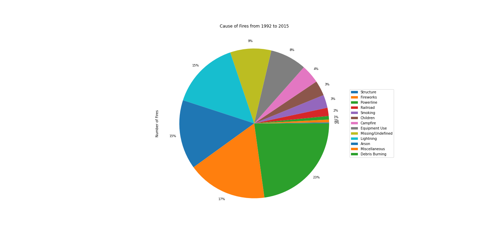

This project is the product of the colaboration of Jagjeet Khalsa, Robert Ward, Alex Paras, and of course myself (Jon Scheaffer). The goal of this project was to anlyze 188-million-us-wildfires with respect to epa-historical-air-quality. Both of these sources are from Kaggle.
Some of the aspects of the data we wanted to explore are:
To see original project, please click link here.
